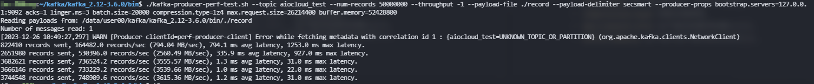

在什么情况下使用消息队列比较合适
- 异步处理
- 流量控制
- 服务解耦
- 流式任务
对于游戏服务而言，所有的请求和响应都是异步的，所以上消息队列是天然优势
消息队列和rpc如何选择
rpc封装完善，底层可以使用http, tcp, mq. 两个不是在一个层面的概念。通常设计中，如果需要消息可靠性（例如添加道具）则使用mq来进行通讯，否则直接使用tcp或者http进行实时通讯即可，例如移动。
kakfak中的一些概念
- broker: 就是kafka的服务器
- producer：客户端生产端
- consumer：客户端消费端
kakfa消息在什么情况下会丢失，对应的解决方案和方案的缺点
- kafka的服务器是异步刷盘的，服务器挂掉会导致可能丢失：kafka不提供同步刷盘机制，只能通过缩短刷盘时间，减少刷盘数据量阈值，但是性能大幅降低。
从根源上解决问题就是，保证服务器稳定，生产端做好日志记录，方便出问题后手动恢复数据。 - kafka集群同步出错：
- 生产端挂掉可能导致消息没有发出去
- 消费端挂掉，没有提交信息导致重复消费
对于消息丢失问题，通用的处理方式就是生产端和消费端做好日志记录，然后在服务器出问题后检查生产和消费是否匹配，对不匹配的进行手动或者自动脚本恢复。
对于重复消费问题，这个就需要做好架构设计，保证最终一致性。
- 例如扣除金币从商城中购买限量道具。这种要做到最终一致性可以考虑就是先扣除金币，当失败的时候返还金币。
- 例如打开指定数量的宝箱，重复消费可能造成打开两次，但是玩家只想打开一个，另一个保留。则需要记录消费seq,避免重复消费，封装好消费seq记录查询过期接口，对于单用户而言这种重要操作量有限，一个seq占8字节。80k数据则可以记录10000次操作，在一定时间内是完全够用的，如果对数据的持久化进行压缩的话最终占据的大小更低。可以配合leveldb这种内嵌数据库，进行本地存储和标记，单线程十万以下ops压力不大
- kafka的服务器是异步刷盘的，服务器挂掉会导致可能丢失：kafka不提供同步刷盘机制，只能通过缩短刷盘时间，减少刷盘数据量阈值，但是性能大幅降低。
kafka不再依靠zookeeper来进行集群管理
https://www.cnblogs.com/edisonchou/p/kafka_study_notes_part10.html
https://blog.csdn.net/loongkingwhat/article/details/122117871kafka保证顺序吗
kafka的消费结构
kafka的消费结构个人认为比较反直觉。当一个topic发送后，所有的group都会获取到，然后每个group各自指定自身一个Consumer进行消费。
如果让我设计一个消息队列，我更愿意是类似linux系统的，group下的所有consumer都会消费，然后topic只发送到指定唯一group. 类似linux的权限管理同一个group下是共享的。
kafka内存占用过大：https://www.orchome.com/10749
kafka性能测试：https://cloud.tencent.com/developer/article/1517123kafka为什么高效
- kafka并不是对每一条消息都实时发送的，会有堆积，批量发送
- 顺序写入磁盘，顺序写磁盘很高效
- 批量发送的时候使用的是零拷贝，直接从文件到socket，减少用户态拷贝操作
- 批量压缩
- 没有fsync到磁盘，性能高效，虽然有丢失风险，但是机器宕机概率低，同时集群会有备份，所以影响不大
- 分区机制水平扩展
kafka分区
- 可以理解为就是一个服务节点，一个broker可以提供多个服务节点
- 如果一个topic发送到多个节点，那么消费者是无序的，所以要保证全局有序则需要一个topic对应一个partition
kafka副本机制
- Partition有副本机制
- Kafka 定义了两类副本：领导者副本和追随者副本
- kafka 副本不对外提供服务，只是为了保证高可用
- 副本是异步同步的
- 副本在非主partition所在broker的其他broker中
kafka的一些参数
--replication-factor 2: 指定两个副本
--partitions 10: 指定10个分区kafka的c代码使用示例
https://www.cnblogs.com/wangbin/p/8192372.html游戏则可以按照服务设计topic. 例如 topic-player-01 topic-player-02。uid中埋sid. 扩容只需要扩sid. 缩容只需要做sid映射。缩容一般是机器级别的，所以如果服务缩容过大，则可以通过sid映射，否则直接迁移节点到机器即可。
服务的启动参数， 启动后向中心服务生产一条服务启动成功的消息
服务有统一的代理中心：db代理, http代理, tcp代理, udp代理等等。
监听 topic-: 获取服务控制信息, 例如开始服务，正式监听处理，更新服务器列表，更新配置信息。 topic- -player
整个系统数据交互全部使用json数据结构kafka搭建
wget https://downloads.apache.org/kafka/3.6.0/kafka_2.12-3.6.0.tgz tar -zxf kafka_2.12-3.6.0.tgz cd kafka_2.12-3.6.0/bin vim server.properties ## 编辑配置如下 ./kafka-storage.sh random-uuid ./kafka-storage.sh format -t Ev66DO2R3EKBZk9aZfTp7A== -c ./server.properties ./kafka-server-start.sh server.propertiesserver.properties:
node.id=1 process.roles=controller,broker controller.quorum.voters=1@localhost:9093 listeners=CONTROLLER://:9093,BROKER://:9092 advertised.listeners=BROKER://:9092 controller.listener.names=CONTROLLER inter.broker.listener.name=BROKER listener.security.protocol.map=CONTROLLER:PLAINTEXT,BROKER:PLAINTEXT num.network.threads=3 num.io.threads=8 socket.send.buffer.bytes=102400 socket.receive.buffer.bytes=102400 socket.request.max.bytes=104857600 log.dirs=/tmp/kraft-broker-logs log.retention.hours=168 log.segment.bytes=1073741824 log.retention.check.interval.ms=300000 num.partitions=1 num.recovery.threads.per.data.dir=1 offsets.topic.replication.factor=1 transaction.state.log.replication.factor=1 transaction.state.log.min.isr=1wget https://github.com/xxd763795151/kafka-console-ui/releases/download/v1.0.8/kafka-console-ui.zip unzip kafka-console-ui.zip cd kafka-console-ui/bin ./start.sh运维->集群切换-> 添加地址： http://192.168.1.80:9092 即可
kafka性能测试
先vim一个record文件，写入消息内容
./kafka-producer-perf-test.sh --topic aiocloud_test --num-records 50000000 --throughput -1 --payload-file ./record --payload-delimiter secsmart --producer-props bootstrap.servers=127.0.0.1:9092 acks=1 linger.ms=3 batch.size=20000 compression.type=lz4 max.request.size=26214400 buffer.memory=52428800kafka-producer-perf-test.sh是一个性能测试脚本，用于评估Kafka生产者的性能。各个参数的含义如下：--topic: 指定要发送消息到的Kafka主题。--num-records: 要发送的记录数。--throughput: 每秒发送的记录数，-1表示不限制。--payload-file: 指定一个文件，该文件包含了要发送的消息内容。脚本会读取这个文件，并将其内容作为消息发送到Kafka。--payload-delimiter: 用于分隔payload-file文件中记录的字符串，默认是换行符。在你的命令中，它被设为secsmart，这意味着脚本会使用secsmart作为分隔符来分割文件中的记录。--producer-props: 生产者配置属性，用于配置Kafka生产者客户端。bootstrap.servers: Kafka集群的地址。acks: 生产者收到服务器响应之前的确认要求。linger.ms: 生产者发送消息前等待更多消息加入批次的时间。batch.size: 每个批次的大小，以字节为单位。compression.type: 消息压缩类型。max.request.size: 生产者发送请求的最大大小。buffer.memory: 生产者可用于缓冲的总内存大小。
